You may run into a scenario where the calculated values of many of your machines drop to zero. This is not a bug, but instead one of the best features of the Modeler. This happens because if you made that in the game, it would also have locked up and come to a halt.
Below are the most common types of deadlocks you can build. Keep in mind that these examples are very simple. Your problem may appear much more complex but probably simplifies to one of these.
Two Outputs to Two Inputs
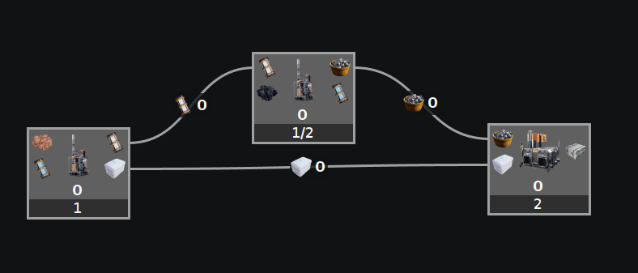
Everything calculated to zero.
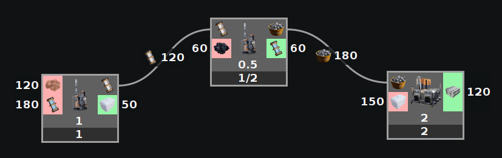
If we disconnect the bottom path, we see it requires 150 but only supplies 50. This means the top path cannot be fully consumed, lowering the output of the bottom path, creating a feedback loop that approaches zero and everything will grind to a halt.
This is most commonly seen when a machine has two outputs whose paths merge back later into different inputs of a machine. The ratios supplied do not exactly equal the ratios needed, so it deadlocks.
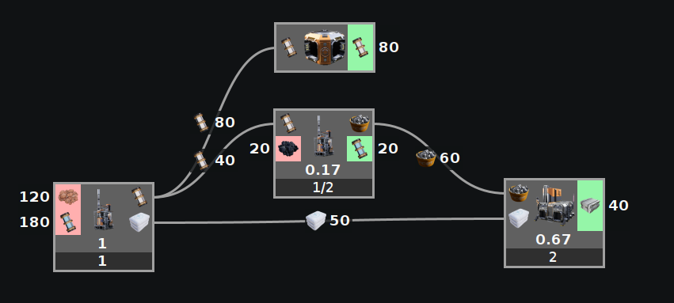
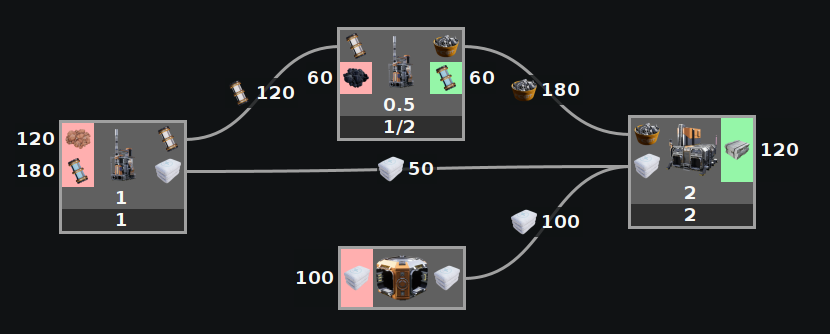
The fix is either to give a place for extra resources to go on the backed-up path, or to supply extra resources to the starved path.
Not Enough Resources Looped Back
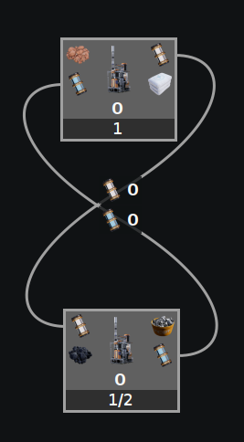
Everything calculated to zero.
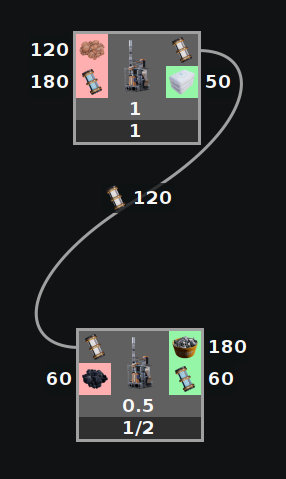
If you disconnect the water you see it requires 180 water, but only supplies 60 water.
By only supplying 60 water, you only produce 20 water, which now only supplies 20 water, which now produces less than 7 water... A feedback loop that will quickly approach zero.
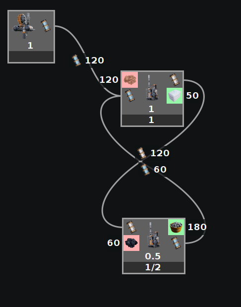
Fix it by adding more water.
Splitter/Merger Preference
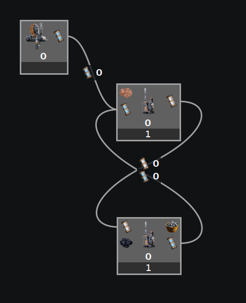
Here is what appears to be the same exact scenario as above, but it is still all zeros. Adding water fixed the other one, but not this one.
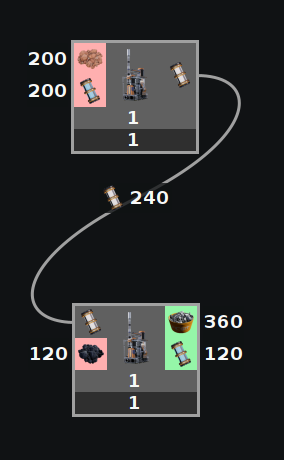
If we disconnect the water we see that we need 200 but loopback 120. The key to this one is in the way the mergers work. They try to take as evenly as possible, which is 100 from the loopback and 100 from the water extractor. This backs up the loopback water causing everything to grind to a halt.
This fails, while the previous example does not, because the loopback is over 50% of the required water.
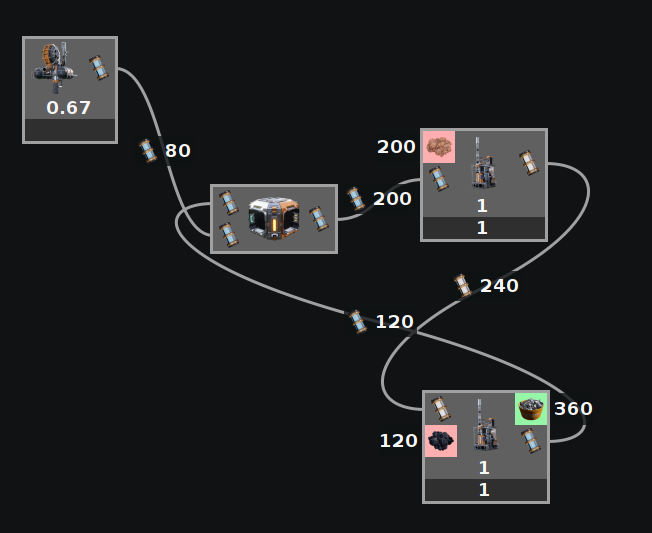
Fix it by adding a priority merger. This ensures that the loopback gets taken first. In game you will need to arrange your pipes to ensure the loopback gets taken first unless you build EXACTLY the amount of water you need.
Too Many Resources Looped Back
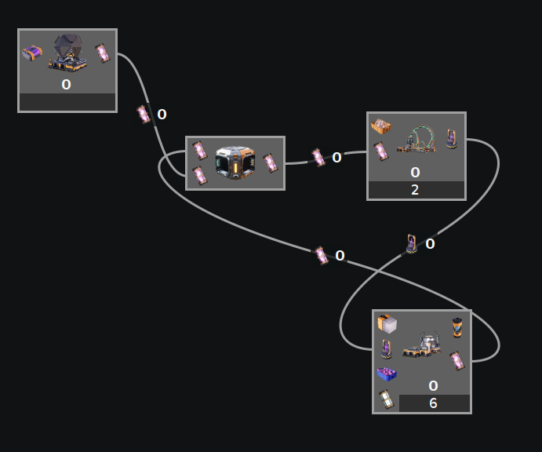
Everything calculated to zero, despite using a priority merger.
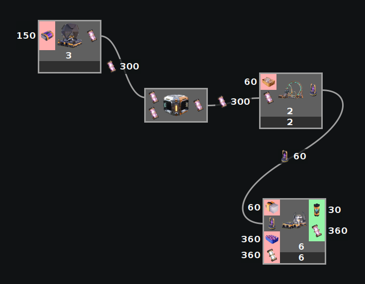
If you disconnect the Dark Matter Residue, you will see it loops back more than is needed. Causing a backup which grinds everything to a halt.
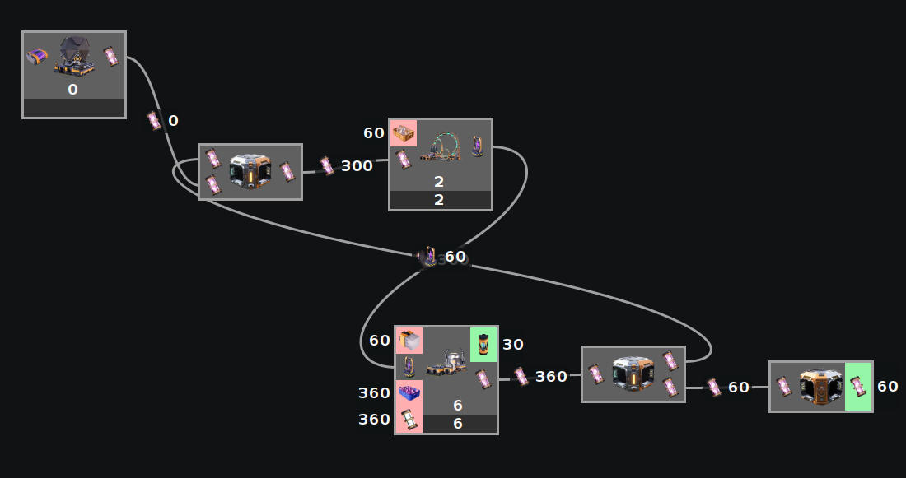
Fix it by giving the excess someplace to go. Be sure to use a priority splitter to ensure enough always gets looped back before getting rid of the excess.